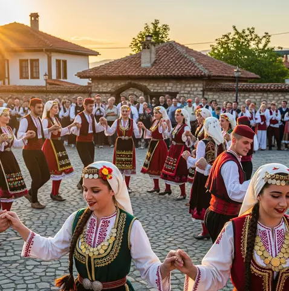

Dança folclórica
Culinária: A comida é farta e reflete a influência mediterrânea e turca. Pratos como o Tavče Gravče (feijão cozido tradicional) e o Burek (massa folhada recheada) são clássicos, frequentemente acompanhados de Rakija (aguardente de frutas).
Tradição Musical: A música tradicional é fortemente influenciada por cantos bizantinos, com destaque para instrumentos como a gaida (gaita de fole) e a kaval (flauta). As danças folclóricas costumam estar presentes em casamentos e festas locais.
Arte Bizantina e Escultura: O país preserva milhares de metros quadrados de afrescos e pinturas de ícones religiosos dos séculos XI a XVI. A capital, Escópia, é conhecida por sua arquitetura eclética que mistura história e modernidade.